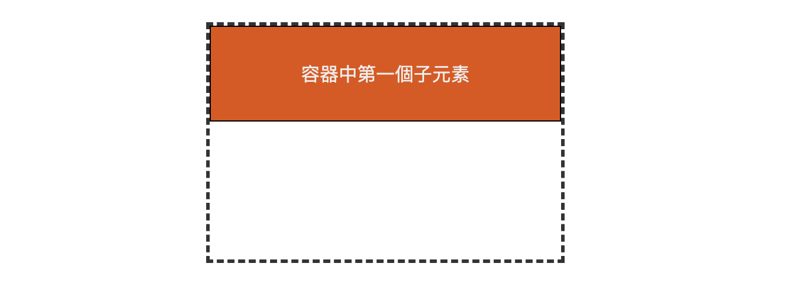
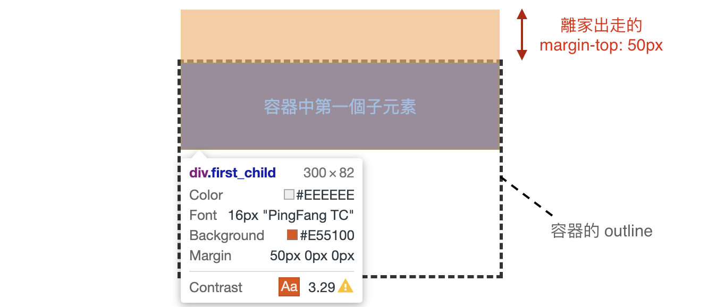

什麼是 Collapsing margins？
先來看一段 W3C 規範 的敘述：
In CSS, the adjoining margins of two or more boxes (which might or might not be siblings) can combine to form a single margin. Margins that combine this way are said to collapse, and the resulting combined margin is called a collapsed margin.
簡單來說，當相鄰(adjoining)的 margin 相遇時，若合併成一個 margin，這種情況稱為 Collapsing margins。其中，W3C 對於相鄰(adjoining)的定義為：
-
僅發生於
垂直方向
-
皆為在文檔流中(in flow)的塊級元素(block-level)元素，且參與
同一個塊格式化上下文(block formatting context，BFC)。例如，若是元素會創建新的 BFC，像是根元素 <html> 、float、position: absolute…等等，該元素就不會有 margin collapsing，至於什麼情況下會創建新的 BFC，可參考 MDN-block formatting context。
什麼時候會發生 margin collapsing？
margin collapsing 可分為兩種情況，一種是同層元素之間，另一種是元素與其父(母)容器之間，但並非所有 block-level 元素皆會發生 margin collapsing，而是有前提條件的。
(一) 相鄰的兄弟姊妹
同層且相鄰的 block 元素的 margin-bottom 與 margin-top 相遇時，發生重疊，僅發生於垂直方向。
前提條件：
block 須符合相鄰(adjoining)的定義：
- 皆為在文檔流中(in flow)的塊級元素(block-level)元素，且參與同一個塊格式化上下文(BFC)。
例如：兩個相鄰的 block 元素，紅色 block 的 margin-bottom = 30px，黑色 block 的 margin-top = 30px，最終兩個 block 元素之間的距離為 30px，而非 60px。
1 | <div class="block1">我有 margin-bottom：30px</div> |
1 | .block1 { |
(二) 容器與其第一個/最後一個子元素
亦僅發生於垂直方向，且有其前提條件。
前提條件:
-
皆為在文檔流中(in flow)的塊級元素(block-level)元素，且參與同一個塊格式化上下文(BFC)。
-
容器
無設定邊框(border)、內距(padding)或加上clear-fix的屬性。
例如：
虛線為容器的 outline，紅色區塊為容器內的第一個子元素，現在子元素頂部緊貼著容器頂部。若想利用 margin-top 屬性，讓子元素的頂部距離容器頂部 50px。
結果會發現，子元素的頂部並沒有與容器頂部分離！
1 | <div class="container"> |
1 | .first_child { |

打開開發人員工具檢視一下，會發現子元素的 margin-top 竟然跑出容器外了，這結果與直接在父容器上設定 margin-top: 50px 是一樣的。

解決方法：
使其不再符合前提條件，例如不再是 block 或是創建 BFC。
margin 計算方式
當發生 margin collapsing 時，由於外距(margin)可為負數，故會有三種情況：
-
兩個 margin 皆為正 ⇒ 取大值
-
一個 margin 為正，一個 margin 為負 ⇒ 相加
-
兩個 margin 皆為負 ⇒ 取最小 (最負)
參考資料